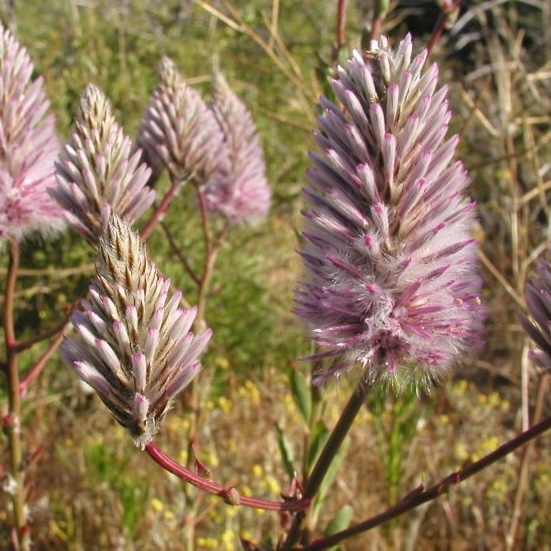
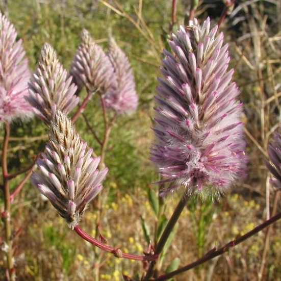

1995
Project Eden was launched with the aim of removing pastoral and feral animals, and reintroducing native species.
1996
As part of Project Eden, the Peron Captive Breeding Centre was established to understand more about animal behaviors and reintroduce species to the Peron Peninsula.


1997
The Malleefowl was successfully reintroduced as part of Project Eden. At the same time, Woylies were reintroduced but the effort was unsuccessful.

2001
Both banded hare-wallabies and rufous hare-wallabies were unsuccessfully reintroduced on the Peron Peninsula as part of Project Eden due to remaining feral cat populations.

2004
Banded hare-wallabies were released on Faure Island and were successfully reintroduced as part of Project Eden.

2006
Quendas (or southern brown bandicoots) were unsuccessfully reintroduced on the Peron Peninsula as part of Project Eden.
 

2012
The Dirk Hartog Island National Park: Return to 1616 project was started with the goal of returning the island to its state before the first Europeans arrived in Shark Bay by removing invasive species and reintroducing native ones.

2013
Bilbies were successfully reintroduced to the Peron Peninsula as part of Project Eden.

2018
As part of the Return to 1616 project, feral cats were eradicated from Dirk Hartog Island. In the same year, banded hare-wallabies and rufous hare-wallabies were reintroduced to the island.
2019
Shark Bay bandicoots and dibblers were reintroduced to Dirk Hartog island as part of the Return to 1616 project.
2021
As part of the Return to 1616 project, the Shark Bay mouse and greater stick-nest rat were reintroduced to Dirk Hartog Island.

2022
The western grasswren was reintroduced to Dirk Hartog Island as part of the Return to 1616 project.

2023
As part of the Return to 1616 project, the brush-tailed mulgara was reintroduced to Dirk Hartog Island.